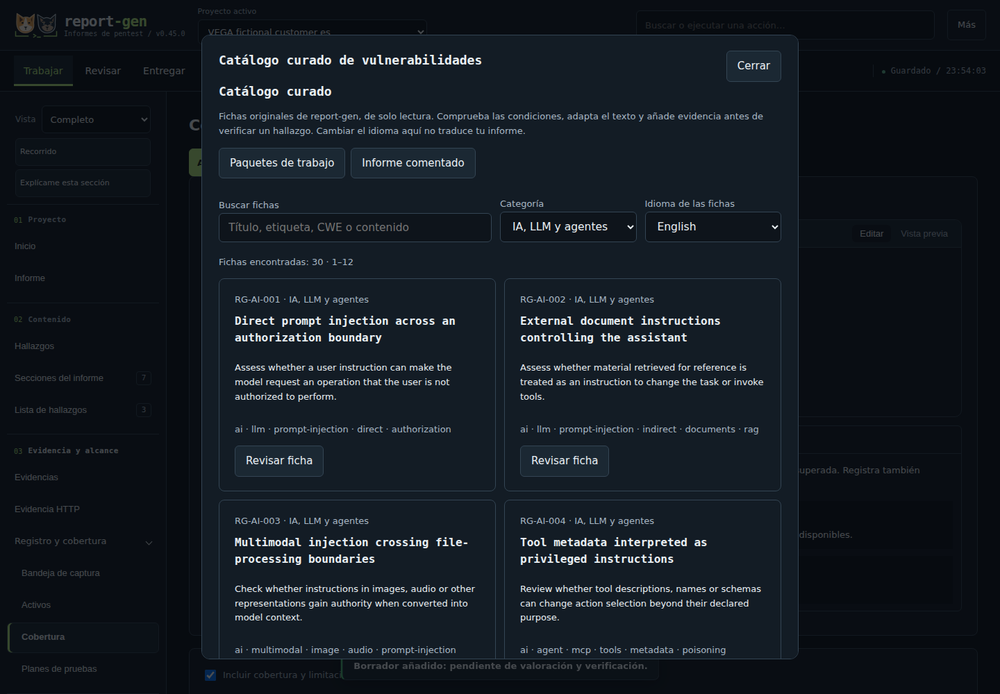
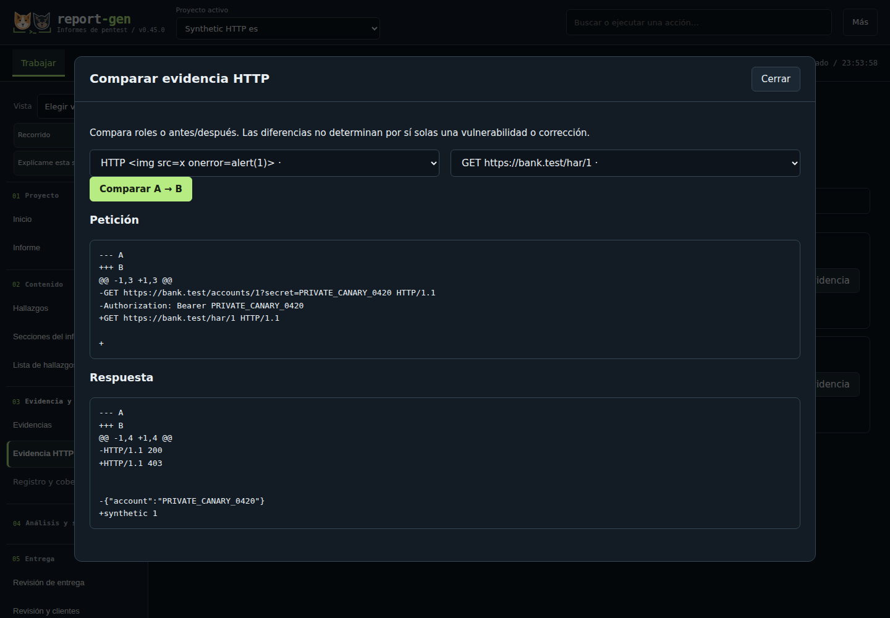

report-gen
v0.45.0Del hallazgo al informe, en tu equipo.
Organiza activos, documenta evidencias y sigue la remediación en un editor local. Exporta PDF, Word, Markdown y HTML portátil desde una misma revisión guardada.
Versión 0.45.0: código fuente, guía de uso y ejemplos ficticios. PDFs de ejemplo históricos (report-gen 0.21.2): Nimbus (PDF) y Banco Lumbre: resumen y lectura HTML completa (PDF, 60 páginas).

Pruebas y límites
Las comprobaciones automáticas de esta revisión pasaron. Es una revisión fechada, no un monitor en tiempo real.
- Versión
- 0.45.0
- Revisado
- Revisión del código
9693c808ee35d0fa438159ff8752af7f5345b31f
Versión publicada y huellas del paquete
Consultar las pruebas y su alcance
Ubuntu 24.04 · Python 3.12
Recorridos del editor y exportación PDF, DOCX, Markdown y HTML. Creación, guardado y recuperación en Chromium y Firefox; controles del HTML portátil y diálogos del editor en Chromium.
Windows Server 2025 · Python 3.12
Pruebas automáticas seleccionadas de guardado, importación, entrega e historial, más creación y recuperación en Chromium. El equipo de pruebas no tiene Microsoft Word instalado.
Paquete de código reproducible
Dos paquetes construidos desde el mismo commit coinciden byte a byte. Una instalación limpia en Linux comprueba el acceso, el guardado en una carpeta externa y las cuatro exportaciones. Esto no certifica cada informe generado.
Pendiente de validar
Revisión nativa en Microsoft Word y cinco sesiones de usabilidad con participantes. Alcance y límites de la aceptación.
Los resultados automáticos corresponden a estos escenarios y entornos. Revisa cada informe final en el programa del destinatario antes de compartirlo.
El problema que resuelve
Preparar un informe exige mantener alineados los hallazgos, sus evidencias, las referencias y la remediación. Cuando cada formato se edita por separado, aparecen inconsistencias que dificultan la revisión. report-gen es un editor local para organizar ese trabajo y exportar PDF, Word, Markdown y HTML portátil desde una misma revisión guardada.
Decisiones de implementación
- Identificadores estables. Conservar los identificadores al eliminar, duplicar o reordenar fichas, para que las referencias mantengan su destino.
- Copia para publicar. Procesar una copia para publicar y conservar separados los originales privados.
- Comprobaciones por formato. Mostrar comprobaciones de cada exportación y distinguir sus límites de la revisión visual necesaria.
SIMULACIÓN · ENTIDAD FICTICIA
Banco Lumbre: del hallazgo a la decisión de negocio
Un caso de banca digital que conecta exposición técnica, apetito de riesgo, impacto y tratamiento. Las evidencias y los costes son sintéticos; no es una evaluación de un cliente.
Alcance 12 condiciones sobre 8 activos ficticios.
Prioridad 5 tratamientos P0; máximo del índice empresarial 20/25, distinto de CVSS.
Un flujo completo de documentación
Una revisión, cuatro formatos
Genera PDF, DOCX editable, Markdown con imágenes y HTML portátil desde una revisión guardada. Interfaz, ayuda e informes en español, inglés y portugués de Brasil; el idioma del informe se elige por separado.
Inicio guiado y biblioteca
Elige vista guiada o completa y consulta 90 fichas curadas, incluidas 30 de IA, LLM y agentes. Los paquetes de trabajo parten de pruebas pendientes y hallazgos sin verificar; las ayudas no inventan resultados.
Importación con revisión
Importa resultados de escáneres y evidencia HTTP/HAR con su procedencia. Compara reimportaciones, selecciona qué incorporar y conserva las decisiones del analista; importar no verifica un hallazgo.
Evidencia y decisiones
Relaciona hallazgos e instancias con activos, evidencias y sus límites. Registra responsables, plazos, correcciones y retests independientes; una corrección parcial no cierra los destinos pendientes.
Revisar antes de compartir
El Inspector de publicación, las copias censuradas y la revisión del PDF ayudan a preparar entregas técnicas, ejecutivas o públicas. Comprueba cada archivo y sus anexos: las ayudas de privacidad no sustituyen la revisión del autor.
HTML que puedes llevar contigo
Comparte un informe autónomo con búsqueda, filtros por tipo y severidad, vista ejecutiva e impresión. Conserva además PDF paginado y DOCX editable para las necesidades del destinatario.
Seguimiento y revisión editorial
Revisa cambios por campo y retornos de remediación sin acreditar retests automáticamente. Los intercambios con Jira Cloud y DefectDojo y la ayuda editorial con Ollama son opcionales, explícitos y conservan el juicio del autor.
Respaldos y nuevas versiones
Conserva revisiones y copias privadas recuperables. Actualiza mediante una Release oficial en una instalación nueva, con respaldo verificado; los borradores del navegador se gestionan aparte.
Explorar tres tareas de reporting
Comprobar antes de entregar
La versión 0.45.0 comprueba referencias, metadatos y enlaces. En HTML, Word y Markdown contrasta además el contexto de las evidencias; en PDF comprueba presencia de texto e imágenes y destinos del índice. En HTML detecta contenido oculto por las reglas CSS contempladas. Todos los formatos necesitan también revisión visual antes de compartirse.
Ver un ejemplo histórico de comprobaciones (0.26.0)


Empieza con la demo Nimbus
- Instala en Linux o Kali. Desde la carpeta extraída, ejecuta
python3 scripts/install.py --desktop. Abre report-gen desde el menú de aplicaciones o con~/.local/bin/report-gen. - Crea una práctica ficticia. Entra en
http://127.0.0.1:8080desde el navegador. Desde Inicio, «Crear práctica ficticia» prepara una copia editable de Nimbus con 12 hallazgos para recorrer el flujo sin usar datos de un cliente. - Trabaja, revisa y entrega. Edita una evidencia, guarda una revisión y prepara los formatos desde Entregar. Comprueba los archivos y su presentación antes de compartirlos.
Requiere Python 3.11 o posterior y las dependencias indicadas en el README. Conserva la carpeta extraída y su entorno .venv: el acceso los necesita, no es un ejecutable autónomo. En Windows y macOS, sigue la guía de instalación.
El instalador guarda los datos en $XDG_DATA_HOME/report-gen o, por defecto, ~/.local/share/report-gen. Puedes elegir otra carpeta con --workspace; consulta la guía para trasladar proyectos antiguos.
Para pedir ayuda, abre «Comprobar instalación», revisa el diagnóstico sintético y descárgalo. Incluye versión, sistema y comprobaciones; excluye proyectos, rutas y nombres de usuario.